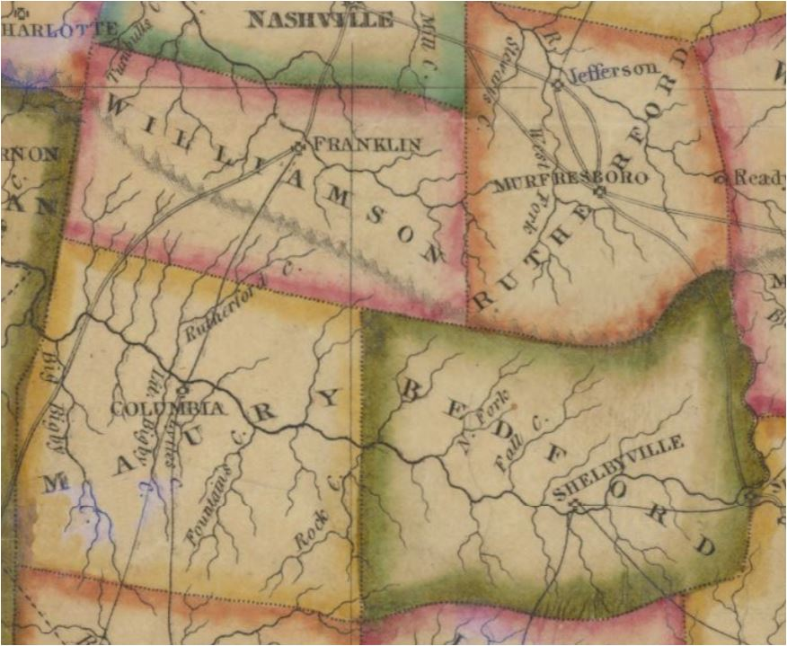

Tennessee TennesseeResearch - Bedford County |
|
[editor note: Howell DAWDY/DOWDY was apparently from the New Jersey "DAWDY" family. You find Howell Dawdy migrating to Virginia/North Carolina/South Carolina before he moves to Tennesssee. Supposedly, there are Revl War documents which outline his lineage and movements. There is a James DAWDY family of the same era in New Jersey which moved to Canada. Research Howell Dawdy's descendants at www.familysearch.com] 1800s 1809 - Howell Dawdy named by legislature to be on committee to select County Seat. Shelbyville was selected in May 1810 1810s 13 Jul 1810 - Howell Dowdy purchased 2 town lots in Shelbyville from the Town Commissioners Deed Bk. B, pg. 372 1812 Bedford Co TN Tax List
13 May 1812 - Howel Dawdy - Grant #3940,100 acr, Bk. M, pg. 196 (index) 1813 - Howell Dowdy was a Town Commissioner for Shelbyville, & witn'd deed of Alfred Dowdy for land Alfred bought from the Commissioners 27 Feb 1813 - John Dowdy bought 50 acrs from Geo.Tilman & David Chrisman. on Caney Spring Crk & Duck River & Flat Creek. Witn: Dan'l Ragsdale, __?__ Cole. Bk. K, pg.26-27 13 Apr 1813 - Daniel Dowdy bought Town Lot #89 from Town Commissioners of Shelbyville (one was Howel Dawdy). Witn. John Patton, David McKissick, Wm.Stone 19 May 1813 - Alfred Dowdy bought a town lot in Shelbyville from Town Commissioners. (One was Howell Dowdy, who also witnessed deed) 26 Nov 1814 - George Dowdy bought 60 acr on Flat Creek & lines of Ambrose Porter & Thomas Gillespie, from George Tilman. Witn: John Dowdy & N.Cossner (Flat Creek is in Wmson County and Maury, what later became Marshall Co) 25 Apr 1815 = Howell Dowdy bought slave "Betty, age 33" from James Meek. Witn: Wm. Coruthers. Bk. G, pg. 150 8 Apr 1818 - Daniel Dawdy sold Town Lot #89 to John Allen - no witn. Bk. K, pg. 41 8 Jun 1818 - John Dowdy bought 200 acr E.side Rock Crk, So.side Duck River, from Wm. Polk. Samuel Polk signed with Wm Polks Power of Attorney. Bk. L, pg. 378-379  1820s 1820 Bedford Co TN Census
5 Mar 1820 - Howell Dowdy, deed to Thomas Blythe Jr for 6 parcels of land, all Howell's household goods & furniture, in return for Blythe to care for Howell & wife Febe for "rest of their natural lives". 30 Dec 1820 - Howell Dowdy, deed for a slave & all farm animals & equipment, to Thomas Blythe Jr of Lincoln Co. Witn: Edward Wade 22 Sep 1825 - D. Dawdy signed petition of Wm. Galbreath for permit to build dam across Duck River. 7 Aug 1826 - John Dowdy sold 112 acr on Jesse Evans line & Columbia Rd, to J. C. and N. E. Caldwell. Witn: Thomas Caldwell & Burkett Tell (Jett?) Bk. U, pg. 192 10 May 1827 - John Dowdy sold 24 acr NE of Shelbyville (for $1) to Levi Roberts. Witn: Thomas Caldwell & Wm. F. Boswell. Bk. V, pg. 233-234 1830s 1830 Bedford Co TN Census
30 Sep 1830 - Allen Dowdy sold 175 acr on Caney Spring Creek to Leonard Bullock. It was land he orig. purch'd from John Marshall. Witn: Aaron Boyd & Richard Wright 3 Dec 1830 - John Dowdy sold Lot #133 (#155??), plus 4 acr No.side of Shelbyville, to John B. Pinson. Witn: Daniel McKissick & John H. Anderson 3 Jan 1832 - John Dowdy sold Town Lot #86 in Shelbyville (formerly Howel Dawdy's home), to John B. Pinson. Witn: Henry Cannon & John H. Anderson 14 Mar 1832 - John Dowdy sold Town Lots #98 & 105 in Shelbyville to Samuel Neely. Witn: John B. Pinson & Joseph B. Shanks Bk. CC, pg. 272 4 Aug 1834 - John Dowdy bought 53 acr on Sinking Crk & lines of Roger Smith & David Gilchrist, from John Bryan. No Witnesses 1836 Tax List, District 13 (became Marshall TN) - Beginning at Waners on Duck River...to Williamson Co line...to Maury Co line...at residence of Jas Patterson in Forks of Caney Spring Creek
1850s 5 July 1858 Bedford TN Will Abstracts - Will of Thomas Cheatham pg 155 and 162. B.F. Duggan, exec. "Left no children. Heirs are brothers and sisters and Gentry family heirs and others." (surnames mentioned and counties): Perry and Gentry all of Bedford Co TN, McCurdy of Grand Co MO, Gibson Dawdy and wife Nancy of Calaway Co KY. Stanfield of Maury Co TN. Gillespie fo Benton Co TN, Taylor of Weakley Co TN. Taylor of Rutherford Co TN. Crawford of Pontetoc MS. Gentry of Randolph Co Arkansas. (note: this Dawdy may be a Dowdy?) |